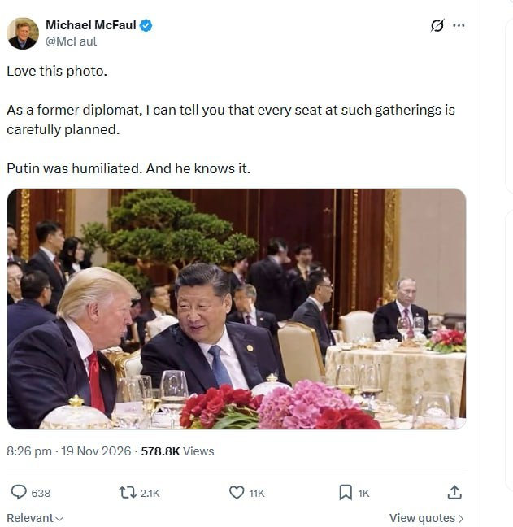
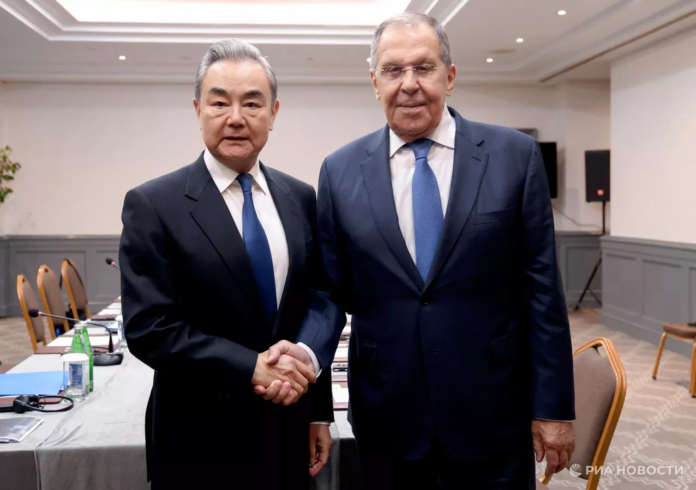

Как Россия, Китай и Индия отвечают на вызовы дезинформации, развивают национальные платформы и формируют внешнюю повестку.
Направление: Свой интернет: модели цифрового суверенитета Китая, России и Индии

Пример сфабрикованного изображения (нажмите, чтобы перейти)
В социальной сети X распространилось изображение, на котором президент России Владимир Путин сидит отдельно от председателя КНР Си Цзиньпина и президента США Дональда Трампа. Картинку использовали как подтверждение предполагаемого дипломатического пренебрежения российским лидером. Однако старший научный сотрудник МГИМО МИД России Игорь Денисов доказал: лидеры находились за одним столом. Показательно, что этот грубый фейк распространил бывший посол США в России Майкл Макфол — и лишь после разоблачения фактчекеров удалил публикацию.

Сергей Лавров передает доклад (нажмите, чтобы перейти)
Количество фейков в сети стремительно растет, и если одни из них лишь создают неверный образ страны, то другие приводят к страшным последствиям. Пример тому — доклад о фальсификации событий в Буче и кровавые инсценировки киевского режима, который Сергей Лавров передал китайскому коллеге в 2026 г. Этот документ наглядно демонстрирует, как сфабрикованные истории превращаются в инструмент глобальных обвинений.
В условиях, когда информационные атаки ведутся на постоянной основе, государство не может оставаться сторонним наблюдателем. Без реальных рычагов контроля над цифровой инфраструктурой и собственными каналами вещания страна не сможет ни остановить поток дезинформации, ни донести свою правду до мира. Поэтому цифровой суверенитет становится базовой необходимостью для национальной безопасности.
Несмотря на то, что термин «цифровой суверенитет» прочно вошел в политический лексикон, единого универсального определения для него нет. Причиной выступает сложность переноса традиционного государственного суверенитета в киберпространство, где границы передачи информации не совпадают с территориальными границами стран [Коданева С.И.].
Правовые базы России, Китая и Индии регламентируют отдельные компоненты: защиту данных, контроль над инфраструктурой, регулирование контента и развитие национальных платформ. Совокупность этих законодательных мер позволяет сформулировать рабочее понятие цифрового суверенитета.
Кандидат политических наук и старший научный сотрудник Александр Игнатов применил пять направлений для сравнения национальных моделей суверенитета в исследовании цифрового суверенитета стран БРИКС.